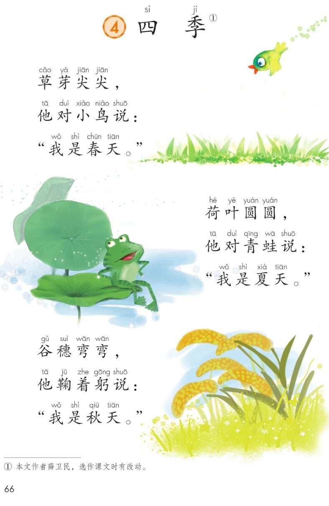
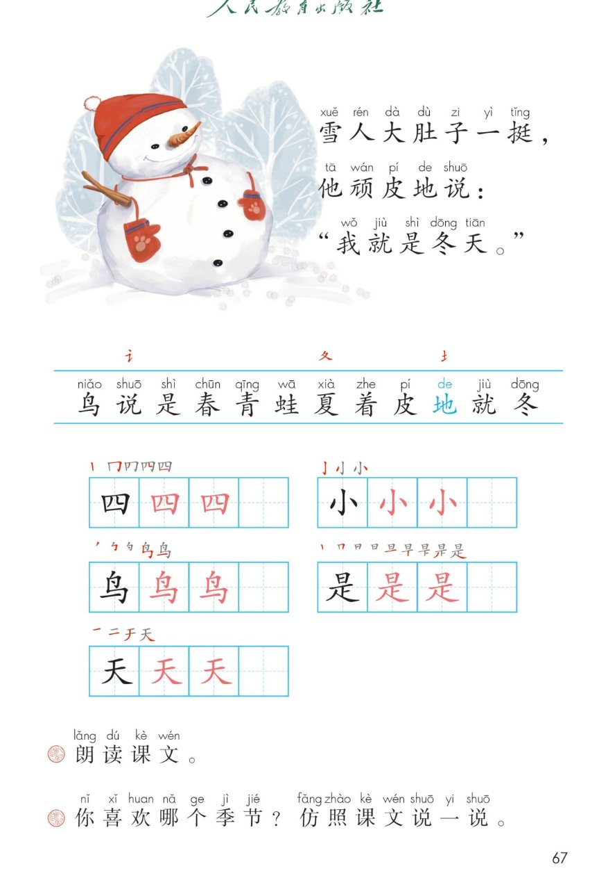

×
🔊 手机听不到声音怎么办？
① 先把手机
媒体音量调大 ，确认没开静音、没连蓝牙耳机；在微信里打开的，点右上角「⋯ → 用浏览器打开」。
② 还是没声音？到应用商店免费下载
Microsoft Edge 浏览器 （它自带朗读发声），用它打开本页面就能出声。
③ 换了 Edge 仍然没声音，说明这部手机的
硬件/系统不支持 网页朗读（多为老旧机型）；近几年买的新手机一般都能正常播放。
→ 打开声音自检
统编版 · 一年级上册 · 第五单元 · 阅读 · 课文4
④ 四季
草芽尖尖，他对小鸟说……一年四季，各有各的好。
分角色朗读 叠词尖尖圆圆弯弯 仿照说一说 闯关 8 题
这一课学什么： 把课文读得有滋有味；认识 12 个字，写好「四、小、鸟、是、天」；
学学「尖尖、圆圆、弯弯 」这样的叠词，再仿照课文说一句话 。🌱☀️🍂⛄
课本第 66~67 页 点一节读一节
读前小贴士： 课文分 4 小节 ，每小节请出一位季节代表。
「他」指的就是前面那个事物——草芽、荷叶、谷穗、雪人。🎭
🎵 全文连读
🔁 跟读模式（读完一节停一停）
课本第 67 页识字条 点一张读一张
识字条 · 连起来读
鸟 说 是 春 青 蛙 夏 着 皮 地 就 冬 —— 「讠 」言字旁陪着说，「土 」土字旁陪着地
偏旁小发现： 讠 言字旁 → 说（和说话有关）；土 土字旁 → 地（和土地有关）；
夂 折文 → 夏、冬都有它。
课本第 67 页田字格 先看笔顺，再动笔
课本第 67 页课后题 点卡片听读
课文里的 AA 式词语 点卡听读
叠词小知识： 把同一个字连说两遍 （尖尖、圆圆、弯弯），样子一下就出现在眼前了。
你还能说：红红、高高、亮亮、甜甜 …… ✨
课后题 · 仿照课文说一说： 桃花红红 ，他对蜜蜂说：「我是春天。」西瓜圆圆 ，他对小朋友说：「我是夏天。」什么怎么样 」，再说「他对谁说 」，最后说「我是哪个季节 」。🗣️
点题目可以听题，点选项就判对错，答完自动算分
已经答 0 题，答对 0 题。
点图放大

第 66 页 · 课文 · 四季（前三节）

第 67 页 · 雪人一节 · 识字条 · 田字格 · 课后题